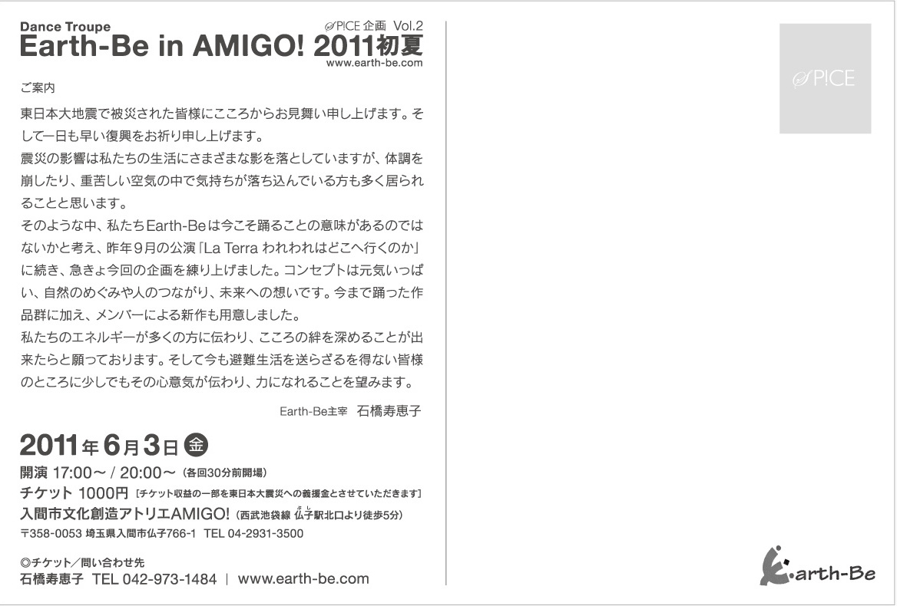

被災地の保育所を訪問しました（２）
南三陸町のHPに続いて、南相馬市のなかよし保育園でのアスビーの様子をヨツバ保育園ヨシユキ副園長のブログにUPしていただきました。
被災地の保育所を訪問しました（１）
「被災地の子どもたちも何もかも忘れて踊り、元気になってほしい。」東日本大震災の被災地である宮城県南三陸町と福島県南相馬市の保育園をメンバー数名で訪問しました。
南三陸町のHPにそのときの模様を掲載していただきました。
「La Terra われわれはどこへ行くのか」再演決定！出演者募集中！
昨年9月、彩の国さいたま芸術劇場にて大成功を収めたEarth-Beのダンス公演「La Terra」を2012年に再演することとなりました！
公演に向けて出演者を募集します。一緒に新たな「La Terra」を創りませんか！

DANCE TROUPE Earth-Be the 7th performance
「Earth-Be in AMIGO! 2011初夏」終演！
入間市文化創造アトリエAMIGO!においての「Earth-Be in AMIGO! 2011初夏」の公演が終演しました！
ご来場頂いた皆様、応援してくださった皆様、ありがとうございました！
公演のご感想はBBSへどうぞ！
DANCE TROUPE Earth-Be the 7th performance
「Earth-Be in AMIGO! 2011初夏」残席僅か！
入間市文化創造アトリエAMIGO!においての「Earth-Be in AMIGO! 2011初夏」の公演が決定しました！
劇場とはまた違った空間でのパフォーマンスをお楽しみ頂ければと思います。


「La Terra われわれはどこへ行くのか」公演アンケート掲載！
「La Terra」の公演をご覧頂いた方にお書き頂きましたアンケートの内容を一部掲載しました！
感想をお寄せ頂いた皆様、ありがとうございました！
DANCE TROUPE Earth-Be the 6th performance
「La Terra われわれはどこへ行くのか」終演！
彩の国さいたま芸術劇場大ホールにおいての「La Terra われわれはどこへ行くのか」の公演が終演しました！
ご来場頂いた皆様、応援してくださった皆様、ありがとうございました！
公演のご感想はBBSへどうぞ！
リハーサル映像第2弾！
リハーサル映像公開！
La Terra 公演直前 石橋寿恵子インタビュー掲載
La Terra 構成・演出・振付の石橋寿恵子が作品やEarth-Beに対する思いを語ったインタビューを掲載しました！
当日劇場で配布するパンフレットにも掲載しますが、こちらはノーカット版です！
- 2011.10.29
- 2011.10.07
- 2011.09.11
- 2011.08.07
- 2011.06.05
- 2011.04.29
- 2010.12.26
- 2010.09.21
- 2010.09.18
- 2010.09.16
- 2010.09.10
- 2010.09.08
- 2010.08.31
- 2010.08.21
- 2010.06.15
- 2010.04.25
- 2010.04.17
- 2009.02.09
- 2009.02.06
- 2008.10.06
- 2006.07.27
- 2006.04.22